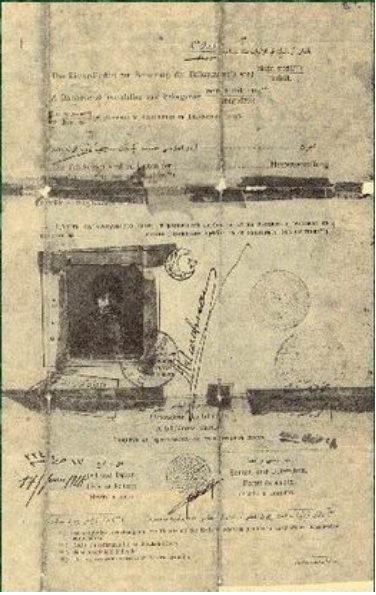
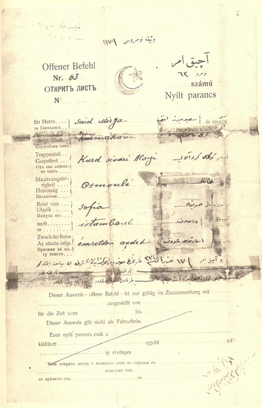
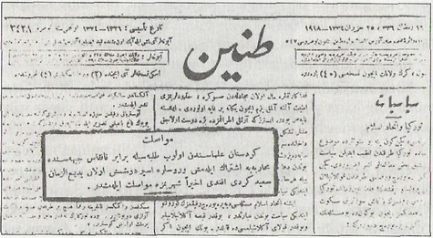

|
Rus esaretinden vatana avdet belgesi |
  
|
|
Rus esaretinden vatana avdet belgesi |
|
Rus esaretinden vatana avdet belgesi

Belgenin ön yüzü

Belgenin arka yüzü
Ýsmi : Said Mirza Efendi
Rütbesi : Fahri kaymakam
Kýt'asý : Gönüllü Kürt Süvari Alayý
Tabiiyeti : Osmanlý
Seyahat mebdei : Sofya
Gideceði mahal : Ýstanbul (Dersaadet)
Sebeb-i seyahat : Esaretten avdet, 17 Haziran 1334 (1918)
(Bediüzzaman Cihan Harbinde gönüllü albay olduðundan bu pasaportu Sofya Ateþemirliði Askeri Daireden almýþtýr.)

Bediüzzaman'ýn esaretten döndüðünü haber veren 25 Haziran 1918 (1334) tarihli Tanin gazetesi ve talebeleriyle beraber Kafkas cephesinde savaþa iþtirak ederek Ruslara esir düþmüþ olan Bediüzzaman Said Efendi'nin Ýstanbul'a dönüþünü yazan Tanin'in o günkü haberi;
Muvasalat
Kürdistan ulemasýndan olup, talebeleriyle beraber Kafkas cephesinde muharebeye iþtirak eylemiþ ve Ruslara esir düþmüþ olan Bediüzzaman Said Kürdî Efendi ahiren þehrimize muvasalat eylemiþtir.